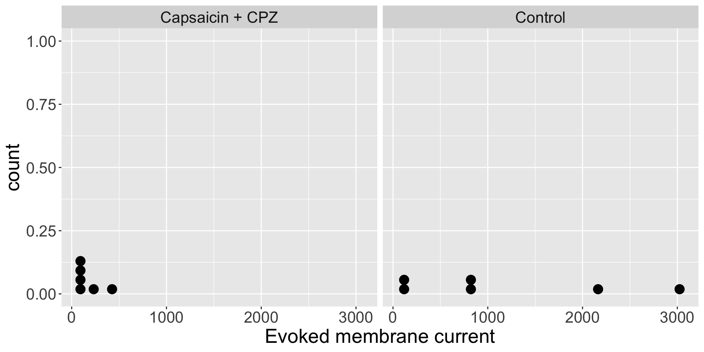
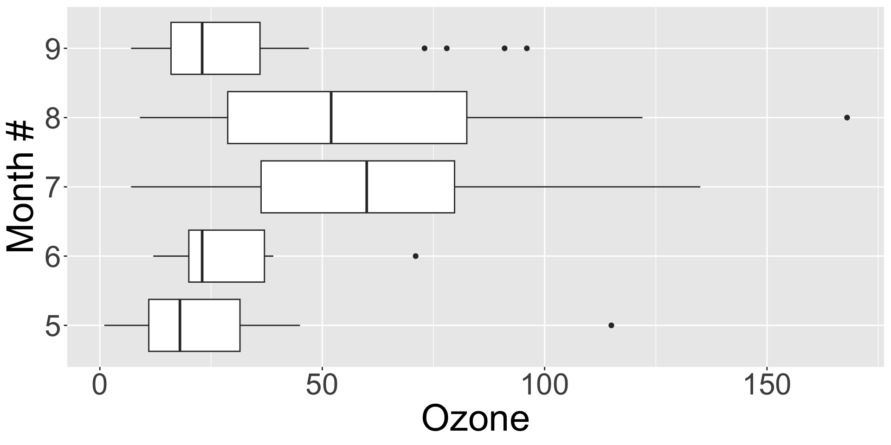

| Patient | Adren | Synth | d | Sign |
|---|---|---|---|---|
| 1 | 3.5 | 3.2 | -0.3 | - |
| 2 | 2.6 | 3.1 | 0.5 | + |
| 3 | 3.0 | 3.3 | 0.3 | + |
| 4 | 1.9 | 2.4 | 0.5 | + |
| 5 | 2.9 | 2.9 | 0.0 | NA |
| 6 | 2.4 | 2.8 | 0.4 | + |
| 7 | 2.0 | 2.6 | 0.6 | + |
Lesson 19: Nonparametric tests
Pagona TB, Chapter 13
Meike Niederhausen and Nicky Wakim
2024-12-04
Learning Objectives
Understand the difference between and appropriate use of parametric and nonparametric tests
Use the (Wilcoxon) Signed-rank test to determine if a single sample or paired sample are symmetric around some value.
Use the Wilcoxon Rank-Sum test to compare two independent numeric samples.
Use the Fisher’s Exact test to determine if two categorical variables are associated.
Use the Kruskal-Wallis test to compare two or more independent numeric samples.
Where are we?

Learning Objectives
- Understand the difference between and appropriate use of parametric and nonparametric tests
Use the (Wilcoxon) Signed-rank test to determine if a single sample or paired sample are symmetric around some value.
Use the Wilcoxon Rank-Sum test to compare two independent numeric samples.
Use the Fisher’s Exact test to determine if two categorical variables are associated.
Use the Kruskal-Wallis test to compare two or more independent numeric samples.
Background: parametric vs nonparametric
- Parametric vs. nonparametric
- Basically saying: assuming a distribution for our data vs. not assuming a distribution for our data
- In all of our inference so far, we have assumed the population (that the data come from) has a specific distribution
- Normal distribution, T-distribution, Chi-squared distribution, F-distribution
- Each of those distribution can be parameterized from certain population parameters
- For example: Normal distribution is completely described (parameterized) by two parameters: \(\mu\) and \(\sigma\)
- Our inference and analysis was all based in the assumed distribution
- But remember: we have specific assumptions that we need to check in order to use those distributions!
- Nonparametric procedures
- Make fewer assumptions about the structure of the underlying population from which the samples were collected
- Work well when distributional assumptions are in doubt.
Nonparametric tests: Pros vs. cons
Pros
- Fewer assumptions
- Can handle smaller sample sizes
- No assumptions about the distribution of the data’s population
- Tests are based on ranks
- Therefore outliers have no greater influence than non-outliers.
- Since tests are based on ranks we can apply these procedures to ordinal data
Cons
- Less powerful than parametric tests (due to loss of information when data are converted to ranks)
- While the test is laid out for us, it may require substantial (computer) work to develop a confidence interval
- Ties in ranks make the test harder to implement
- Some nonparametric methods can be computationally intensive, especially for large datasets or complex designs
Parametric and nonparametric tests
| Type of data | Parametric test | Nonparametric test |
|---|---|---|
| Single sample, numeric | Single mean hypothesis test or t-test (L11) | Sign test or (Wilcoxon) signed-rank test |
| Paired sample, numeric | Mean difference (paired) hypothesis test or t-test (L12) | Sign test or (Wilcoxon) signed-rank test |
| Two independent sample, numeric | Difference in means hypothesis test or two sample t-test (L13) | Wilcoxon rank-sum test or Mann-Whitney U test |
| Single sample, binary | Single proportion hypothesis test (L15) | |
| Two independent sample, binary | Difference in proportions hypothesis test (L15) | |
| 2+ independent samples, binary | Chi-squared test (L16) | Fisher’s Exact test |
| 2+ independent samples, numeric | ANOVA test or F-test (L17) | Kruskal-Wallis test |
We still follow the general hypothesis test process
Check the assumptions
- We will not meet the parametric assumptions!
- There are some assumptions for the nonparametric tests
Set the level of significance \(\alpha\)
Specify the null ( \(H_0\) ) and alternative ( \(H_A\) ) hypotheses
- In symbols
- In words
- Alternative: one- or two-sided?
Calculate the test statistic and p-value
- We will not discuss the test statistic’s equation
Write a conclusion to the hypothesis test
- Do we reject or fail to reject \(H_0\)?
- Write a conclusion in the context of the problem
Poll Everywhere Question 1
Poll Everywhere Question 2
Learning Objectives
- Understand the difference between and appropriate use of parametric and nonparametric tests
- Use the (Wilcoxon) Signed-rank test to determine if a single sample or paired sample are symmetric around some value.
Use the Wilcoxon Rank-Sum test to compare two independent numeric samples.
Use the Fisher’s Exact test to determine if two categorical variables are associated.
Use the Kruskal-Wallis test to compare two or more independent numeric samples.
Parametric and nonparametric tests
| Type of data | Parametric test | Nonparametric test |
|---|---|---|
| Single sample, numeric | Single mean hypothesis test or t-test (L11) | Sign test or (Wilcoxon) signed-rank test |
| Paired sample, numeric | Mean difference (paired) hypothesis test or t-test (L12) | Sign test or (Wilcoxon) signed-rank test |
| Two independent sample, numeric | Difference in means hypothesis test or two sample t-test (L13) | Wilcoxon rank-sum test or Mann-Whitney U test |
| Single sample, binary | Single proportion hypothesis test (L15) | |
| Two independent sample, binary | Difference in proportions hypothesis test (L15) | |
| 2+ independent samples, binary | Chi-squared test (L16) | Fisher’s Exact test |
| 2+ independent samples, numeric | ANOVA test or F-test (L17) | Kruskal-Wallis test |
(Wilcoxon) Signed-rank test
- The (Wilcoxon) signed-rank test is used for
- Paired samples (i.e., a single set of differences)
- One-sample comparison against a specified value
- If we want to see if data are symmetric (centered) around a certain value
- For paired data, we may want to see if the data are symmetric around 0 to determine a difference
- For one sample, we may have an idea of a median value that our data may follow
- Think back to the parametric parallel of these!
- If we apply the body temperature example to this: We would check if the data were symmetric around 98.6
- Data do NOT need to be approximately normal
Example: Intraocular pressure of glaucoma patients
- Intraocular pressure of glaucoma patients is often reduced by treatment with adrenaline.
- A new synthetic drug is being considered, but it is more expensive than the current adrenaline alternative.
- 7 glaucoma patients were treated with both drugs:
- one eye with adrenaline and
- the other with the synthetic drug
- Reduction in pressure was recorded in each eye after following treatment (larger numbers indicate greater reduction)
- d is the difference in reduction of pressure: Synth - Adren
- Sign is
+if the difference is positive and-if the difference is negative
(Wilcoxon) Signed-rank test: Hypotheses
General wording for hypotheses
\(H_0:\) population is symmetric around some value \(\tilde{\mu}_0\)
\(H_a:\) population is not symmetric around some value \(\tilde{\mu}_0\)
Hypotheses test for example
\(H_0:\) the population difference in reduction of intraocular pressure in treatment with adrenaline vs. new synthetic drug is symmetric around \(\tilde{\mu}_0 =0\)
\(H_a:\) the population difference in reduction of intraocular pressure in treatment with adrenaline vs. new synthetic drug is not symmetric around \(\tilde{\mu}_0 =0\)
- Even if the population has a mean/median equal to \(\tilde{\mu}_0\), the test may reject the null if the population isn’t symmetric, thus only use if the data (differences) are symmetric.
- If the population is symmetric
- then the mean and median coincide,
- thus often the null hypothesis is phrased in terms of the median (or median difference) being 0
Example: Visualize the differences
Visualize the differences in reduction of pressure \(d\) : Synth - Adren
Example: Calculate signed ranks
- Rank the absolute values of the differences from smallest to largest
- For ties, take the average of the highest and lowest tied ranks
- I.e. if ranks 3-7 are tied, then assign (3+7)/2 = 5 as the rank
- Then calculate the signed ranks as +/- the rank depending on whether the sign is +/-
| Patient | Adren | Synth | d | Sign | Rank | Signed_rank |
|---|---|---|---|---|---|---|
| 1 | 3.5 | 3.2 | -0.3 | - | 1.5 | -1.5 |
| 2 | 2.6 | 3.1 | 0.5 | + | 4.5 | 4.5 |
| 3 | 3.0 | 3.3 | 0.3 | + | 1.5 | 1.5 |
| 4 | 1.9 | 2.4 | 0.5 | + | 4.5 | 4.5 |
| 5 | 2.9 | 2.9 | 0.0 | NA | NA | NA |
| 6 | 2.4 | 2.8 | 0.4 | + | 3.0 | 3.0 |
| 7 | 2.0 | 2.6 | 0.6 | + | 6.0 | 6.0 |
(Wilcoxon) Signed-rank test: Test statistic
- If the null is true:
- The population is symmetric around some point (\(\tilde{\mu}_0 = 0\) , typically), and
- The overall size of the positive ranks should be about the same as the overall size of negative ranks.
- We can split the positive and negative ranks
- \(T^+\) = sum of the positive ranks
- \(T^-\) = sum of the negative ranks
- Thus, any of the following can be used as a test statistic and will lead to the same conclusion:
- \(T^+\) (what R is using)
- \(T^-\)
- \(T^+ - T^-\)
- \(\min(T^+,|T^−|) = T_0\)
Example: calculate sums of signed ranks
- Sum of the positive ranks
- \(T^+\) = 1.5 + 3 + 4.5 + 4.5 + 6 = 19.5
- Sum of the negative ranks
- \(T^-\) = -1.5
- \(\min(T^+,|T^−|) = T_0 = 1.5\)
| Patient | Adren | Synth | d | Sign | Rank | Signed_rank |
|---|---|---|---|---|---|---|
| 1 | 3.5 | 3.2 | -0.3 | - | 1.5 | -1.5 |
| 2 | 2.6 | 3.1 | 0.5 | + | 4.5 | 4.5 |
| 3 | 3.0 | 3.3 | 0.3 | + | 1.5 | 1.5 |
| 4 | 1.9 | 2.4 | 0.5 | + | 4.5 | 4.5 |
| 5 | 2.9 | 2.9 | 0.0 | NA | NA | NA |
| 6 | 2.4 | 2.8 | 0.4 | + | 3.0 | 3.0 |
| 7 | 2.0 | 2.6 | 0.6 | + | 6.0 | 6.0 |
(Wilcoxon) Signed-rank test: Exact p-value (fyi)
- Exact p-value is preferable
- This is the default method in R’s
wilcox.test()- if the samples contain less than 50 finite values
- and there are no ties
- R will automatically use normal approximation method if there are ties
- This is the default method in R’s
- We will not be calculating the exact p-value “by hand.” We will be using R for this.
\[p-value = 2 * P(\min(T^+,T^−) \leq t)\]
- \(t\) is the smaller of the calculated sums of the positive and negative ranks
- To calculate the exact p-value, we need the probability of each possible sum of ranks
(Wilcoxon) Signed-rank test in R: Glaucoma example
“Attempt” with exact p-value & running one sample test with differences
(Wilcoxon) Signed-rank test: Conclusion
Recall the hypotheses to the (Wilcoxon) Signed-rank test:
\(H_0:\) the population difference in reduction of intraocular pressure in treatment with adrenaline vs. new synthetic drug is symmetric around \(\tilde{\mu}_0 =0\)
\(H_a:\) the population difference in reduction of intraocular pressure in treatment with adrenaline vs. new synthetic drug is not symmetric around \(\tilde{\mu}_0 =0\)
- Significance level: \(\alpha\) = 0.05
- p-value = 0.07314
- Do we reject or fail to reject \(H_0\)?
Conclusion:
There is insufficient evidence the differences in reduction in intraocular pressure differs between the synthetic drug and adrenaline are symmetric about 0 (2-sided Wilcoxon signed rank test \(p\)-value = 0.07314)
(Wilcoxon) Signed-rank test with one sample
- One can use the (Wilcoxon) Signed-rank test when testing just one sample
- Note that we did this when in R: Ran the (Wilcoxon) Signed-rank test using just the differences
- For one sample, we can specify the null population median value:
\(H_0:\) The population median is \(m\)
\(H_a:\) The population median is NOT \(m\)
Not-so-real example: Run (Wilcoxon) Signed-rank test for paired data with null \(m = 0.7\)
Learning Objectives
Understand the difference between and appropriate use of parametric and nonparametric tests
Use the (Wilcoxon) Signed-rank test to determine if a single sample or paired sample are symmetric around some value.
- Use the Wilcoxon Rank-Sum test to compare two independent numeric samples.
Use the Fisher’s Exact test to determine if two categorical variables are associated.
Use the Kruskal-Wallis test to compare two or more independent numeric samples.
Parametric and nonparametric tests
| Type of data | Parametric test | Nonparametric test |
|---|---|---|
| Single sample, numeric | Single mean hypothesis test or t-test (L11) | Sign test or (Wilcoxon) signed-rank test |
| Paired sample, numeric | Mean difference (paired) hypothesis test or t-test (L12) | Sign test or (Wilcoxon) signed-rank test |
| Two independent sample, numeric | Difference in means hypothesis test or two sample t-test (L13) | Wilcoxon rank-sum test or Mann-Whitney U test |
| Single sample, binary | Single proportion hypothesis test (L15) | |
| Two independent sample, binary | Difference in proportions hypothesis test (L15) | |
| 2+ independent samples, binary | Chi-squared test (L16) | Fisher’s Exact test |
| 2+ independent samples, numeric | ANOVA test or F-test (L17) | Kruskal-Wallis test |
Wilcoxon rank-sum test
The nonparametric alternative to the two-sample \(t\)-test
- used to analyze two samples selected from separate (independent) populations
Also called the Mann-Whitney U test
Unlike the signed-rank test, there is no need to assume symmetry
Necessary condition is that the two populations being compared
- have the same shape (both right skewed, both left skewed, or both symmetric),
- so any noted difference is due to a shift in the median
Since they have the same shape, when summarizing the test, we can describe the results in terms of a difference in medians.
Hypotheses:
\(H_0:\) the two populations have the same median
\(H_a:\) the two populations do NOT have the same median
Example
Dr. Priya Chaudhary (OHSU) examined the evoked membrane current of dental sensory neurons (in rats) under control conditions and a mixture of capsaicin plus capsazepine (CPZ). J. Dental Research} 80:1518–23, 2001.
| Group | variable | n | median |
|---|---|---|---|
| Capsaicin + CPZ | Memb_current | 6 | 112 |
| Control | Memb_current | 6 | 822 |
| Rat_ID | Group | Current |
|---|---|---|
| 1 | Control | 3024 |
| 2 | Control | 2164 |
| 3 | Control | 864 |
| 4 | Control | 780 |
| 5 | Control | 125 |
| 6 | Control | 110 |
| 7 | Capsaicin + CPZ | 426 |
| 8 | Capsaicin + CPZ | 232 |
| 9 | Capsaicin + CPZ | 130 |
| 10 | Capsaicin + CPZ | 94 |
| 11 | Capsaicin + CPZ | 75 |
| 12 | Capsaicin + CPZ | 55 |
Example: Visualize the data
Do the independent samples have the same distribution?
Wilcoxon rank-sum test: Calculating test statistic \(W\)
Combine the two samples together (keep track of which observations came from each sample).
Rank the full set of \(N=n_1 + n_2\) observations.
- If ties exist, assign average ranks to tied values (like signed-rank test)
Sum the ranks corresponding to those observations from the smaller sample.
- This is a time-saving step; you could also have used the larger sample.
- Call this sum \(W\)
If \(n_1, n_2\) are both less than 10, then use an exact test (can only be done if no ties are present)
- Otherwise use the large-sample normal approximation.
In our example, both groups have equal n; choose either for computing W.
\[W_{CPZ}=1+2+3+6+7+8 = 27\]
\[W_{control}=4+5+9+10+11+12 = 51\]
| Rat_ID | Group | Current | Rank |
|---|---|---|---|
| 12 | Capsaicin + CPZ | 55 | 1 |
| 11 | Capsaicin + CPZ | 75 | 2 |
| 10 | Capsaicin + CPZ | 94 | 3 |
| 6 | Control | 110 | 4 |
| 5 | Control | 125 | 5 |
| 9 | Capsaicin + CPZ | 130 | 6 |
| 8 | Capsaicin + CPZ | 232 | 7 |
| 7 | Capsaicin + CPZ | 426 | 8 |
| 4 | Control | 780 | 9 |
| 3 | Control | 864 | 10 |
| 2 | Control | 2164 | 11 |
| 1 | Control | 3024 | 12 |
Wilcoxon rank-sum test: Exact p-value approach
- If \(n_1, n_2\) are both less than 10, then use an exact test,
- otherwise use the large-sample normal approximation.
- However, exact method can only be done if no ties are present
- p-value is the probability of getting a rank sum \(W\) as extreme or more extreme than the observed one.
- Multiply the 1-tail probability by 2 for the 2-tailed probability
\[p-value = 2 \cdot P(W_{CPZ} \leq 27)\]
- To calculate \(P(W_{CPZ} \leq 27)\),
- we need to enumerate all possible sets ranks for the sample size,
- calculate the sum of ranks for each set of possible ranks,
- and then the probability for each sum (assuming each set of ranks is equally likely).
- we need to enumerate all possible sets ranks for the sample size,
Wilcoxon rank-sum test: using R
Exact p-value
Wilcoxon rank-sum test: Conclusion
Recall the hypotheses to the Wilcoxon rank-sum test:
\(H_0:\) the control and treated populations have the same median
\(H_a:\) the control and treated populations do NOT have the same median
- Significance level: \(\alpha\) = 0.05
- p-value = 0.06494
- Do we reject or fail to reject \(H_0\)?
Conclusion:
There is suggestive but inconclusive evidence that the evoked membrane current of dental sensory neurons (in rats) differs between the control group and the group exposed to a mixture of capsaicin plus capsazepine (2-sided Wilcoxon rank-sum test \(p\)-value = 0.06494).
Learning Objectives
Understand the difference between and appropriate use of parametric and nonparametric tests
Use the (Wilcoxon) Signed-rank test to determine if a single sample or paired sample are symmetric around some value.
Use the Wilcoxon Rank-Sum test to compare two independent numeric samples.
- Use the Fisher’s Exact test to determine if two categorical variables are associated.
- Use the Kruskal-Wallis test to compare two or more independent numeric samples.
Parametric and nonparametric tests
| Type of data | Parametric test | Nonparametric test |
|---|---|---|
| Single sample, numeric | Single mean hypothesis test or t-test (L11) | Sign test or (Wilcoxon) signed-rank test |
| Paired sample, numeric | Mean difference (paired) hypothesis test or t-test (L12) | Sign test or (Wilcoxon) signed-rank test |
| Two independent sample, numeric | Difference in means hypothesis test or two sample t-test (L13) | Wilcoxon rank-sum test or Mann-Whitney U test |
| Single sample, binary | Single proportion hypothesis test (L15) | |
| Two independent sample, binary | Difference in proportions hypothesis test (L15) | |
| 2+ independent samples, binary | Chi-squared test (L16) | Fisher’s Exact test |
| 2+ independent samples, numeric | ANOVA test or F-test (L17) | Kruskal-Wallis test |
Fisher’s Exact Test
- Only necessary when expected counts in one or more cells is less than 5
- Given row and column totals fixed, computes exact probability that we observe our data or more extreme data
- Consider a general 2 x 2 table:

- The exact probability of observing a table with cells (a, b, c, d) can be computed based on the hypergeometric distribution
\[P(a, b, c, d) = \dfrac{(a+b)!\cdot(c+d)!\cdot(a+c)!\cdot(b+d)!}{n!\cdot a!\cdot b!\cdot c!\cdot d!}\]
- Numerator is fixed and denominator changes
Some notes on the Fisher’s Exact Test
- This is always a two-sided test
- There is no test statistic nor CI
- There is no continuity correction since the hypergeometric distribution is discrete
Recall our example from Lesson 4 and 16
Question: Is there an association between age group and hypertension?
- Let’s pretend that we actually had the following numbers
| Age Group | Hypertension | No Hypertension | Total |
|---|---|---|---|
| 18-39 yrs | 1 | 11 | 12 |
| 40-59 yrs | 4 | 9 | 13 |
| 60+ yrs | 4 | 2 | 6 |
| Total | 9 | 22 | 31 |
Fisher’s Exact test: Hypertension
- Check expected cell counts threshold
Hypertension No_Hypertension
[1,] 3.483871 8.516129
[2,] 3.774194 9.225806
[3,] 1.741935 4.258065We’re going to pretend they are less than 5.
\(\alpha = 0.05\)
Hypothesis test:
- \(H_0\) : There is no association between age group and hypertension
- \(H_1\) : There is an association between age group and hypertension
- Calculate the test statistic and p-value for Chi-squared test in R
Fisher's Exact Test for Count Data
data: hyp_data2
p-value = 0.04062
alternative hypothesis: two.sided- Conclusion to the hypothesis test
We reject the null hypothesis that age group and hypertension are not associated (\(p=0.04062\)). There is sufficient evidence that age group and hypertension are associated.
Learning Objectives
Understand the difference between and appropriate use of parametric and nonparametric tests
Use the (Wilcoxon) Signed-rank test to determine if a single sample or paired sample are symmetric around some value.
Use the Wilcoxon Rank-Sum test to compare two independent numeric samples.
Use the Fisher’s Exact test to determine if two categorical variables are associated.
- Use the Kruskal-Wallis test to compare two or more independent numeric samples.
Parametric and nonparametric tests
| Type of data | Parametric test | Nonparametric test |
|---|---|---|
| Single sample, numeric | Single mean hypothesis test or t-test (L11) | Sign test or (Wilcoxon) signed-rank test |
| Paired sample, numeric | Mean difference (paired) hypothesis test or t-test (L12) | Sign test or (Wilcoxon) signed-rank test |
| Two independent sample, numeric | Difference in means hypothesis test or two sample t-test (L13) | Wilcoxon rank-sum test or Mann-Whitney U test |
| Single sample, binary | Single proportion hypothesis test (L15) | |
| Two independent sample, binary | Difference in proportions hypothesis test (L15) | |
| 2+ independent samples, binary | Chi-squared test (L16) | Fisher’s Exact test |
| 2+ independent samples, numeric | ANOVA test or F-test (L17) | Kruskal-Wallis test |
Kruskal-Wallis test: nonparametric ANOVA test
- Recall that an ANOVA tests means from 2 or more groups
- Conditions for ANOVA include
- Sample sizes in each group group are large (each \(n \ge 30\)),
- OR the data are relatively normally distributed in each group
- Variability is “similar” in all group groups
- Sample sizes in each group group are large (each \(n \ge 30\)),
- If these conditions are in doubt, or if the response is ordinal, then the Kruskal-Wallis test is an alternative.
\[\begin{align} H_0 &: \text{pop median}_1 = \text{pop median}_2 = ... = \text{pop median}_k\\ \text{vs. } H_A&: \text{At least one pair } \text{pop median}_i \neq \text{pop median}_j \text{ for } i \neq j \end{align}\]
- K-W test is an extension of the (Wilcoxon) rank-sum test to more than 2 groups
- With \(k=2\) groups, the K-W test is the same as the rank-sum test
Ranks for the K-W test
- Combine the \(k\) samples together (keep track of which observations came from each sample).
- Rank the full set of \(N = n_1 + \ldots + n_k\) observations.
- If ties exist, assign average ranks to the tied values (as with the signed-rank test).
- Then sum the ranks within each of the \(k\) groups
- Label the sums of the ranks for each group as \(R_1, \ldots + R_k\).
If \(H_0\) is true, we expect the populations to have the same medians, and thus the ranks to be similar as well.
Example: Ozone levels by month
airqualitydata included in base R - no need to load it- Daily air quality measurements in New York, May to September 1973.
- Question: Do ozone levels differ by month?
| Month | variable | n | mean | median | sd |
|---|---|---|---|---|---|
| 5 | Ozone | 26 | 23.615 | 18 | 22.224 |
| 6 | Ozone | 9 | 29.444 | 23 | 18.208 |
| 7 | Ozone | 26 | 59.115 | 60 | 31.636 |
| 8 | Ozone | 26 | 59.962 | 52 | 39.681 |
| 9 | Ozone | 29 | 31.448 | 23 | 24.142 |

- Does not look like each month has equal variance so we cannot use ANOVA
K-W test in R
Kruskal-Wallis rank sum test
data: Ozone by Month
Kruskal-Wallis chi-squared = 29.267, df = 4, p-value = 6.901e-06
There is sufficient evidence that the median ozone levels are different in at least two months from May - September, 1973 in New York City (p < 0.001; Kruskal-Wallis test).
- (fyi) Since the K-W test is significant, follow-up with pairwise (Wilcoxon) rank-sum tests using a multiple comparison procedure to identify which months have different medians.
Lesson 19 Slides